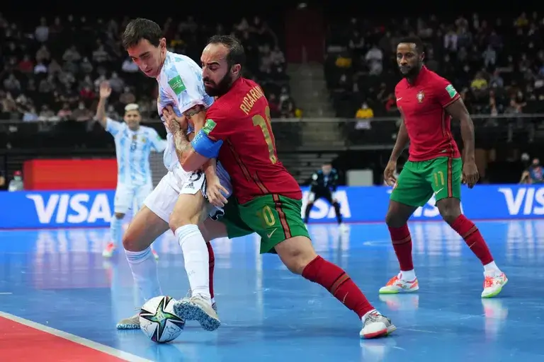

REGLAS DEL FUTSAL
En Futsal, tenemos dos tipos de reglas: AMF y FIFA la cual tienen reglamentos diferentes, con aspectos compartidos. A continuacion les dejamos el link de un video para que esten mucho más informados (Reglas del Futsal).
ASPECTOS COMPARTIDOS
- Ambos equipos están integrados por cinco jugadores.
- Los jugadores no pueden tocar la pelota con la mano, con la excepción de los arqueros, dentro de sus correspondientes áreas.
- El objetivo del juego es realizar goles, introduciendo la pelota en el arco del equipo contrario. Cada gol vale un punto.
- Se juega en canchas de suelo rígido, más pequeñas que las del fútbol 11, variando su tamaño según la asociación.
- Los arcos son más pequeños que en el fútbol 11
- La pelota es más pequeña y con menor circunferencia que las de fútbol 11, con diferencias de tamaño según la asociación.
- Se permiten cambios ilimitados.
- Se utiliza un régimen de faltas especial, que establece que a partir de la quinta falta de equipo, se deba patear un tiro libre sin barrera denominado doble penal.
DURACION DEL PARTIDO
- La duración es de 40 minutos dividida en dos partes.
- Cada tiempo es de 20 minutos, entre estos 15 minutos de descanso.
- Cada equipo tiene un tiempo extra dentro de cada mitad, estos duran 1 minuto.
DIFERENCIAS SEGÚN ASOCIACION
| REGLAS | AMS | FIFA |
|---|---|---|
| Circunferencia de la pelota | 58 a 60 cm | 62 a 64 cm |
| Peso de la pelota | 450 a 470 gr | 400 a 440 gr |
| Presión de la pelota | Presión de la pelota | 9 lbs |
| Largo de la cancha | 30 a 40 m | 38 a 42 m |
| Ancho de la cancha | 16 a 20 m | 18 a 22 m |
| Distancia en doble penal | 9 metro de distancia | 10 metros de distancia |
| Cambios (juego detenido) | Si | No |
| Cambios (aviso del árbitro) | Si | No |
| Faltas acumulables a jugadores | Si | No |
| Barrera | 3 m | 5 m |
| Saque lateral | Con las manos | Con los pies |
| Tiro de esquina | Con las manos | Con los pies |
| Tarjeta azul | Si | No |
FUNDAMENTOS TECNICOS Y TACTICOS
- PASES: es la acción de entregar el balón a otro en la mayor precisión posible. Pueden ser cortos, medios o largos, en función de la distancia. Según su trayectoria serán ascendentes, descendentes, parabólicos o a ras de suelo; y según su dirección, variarán en lateral, retrasados y en diagonal.
- CONDUCCIÓN: es un gesto imprescindible para adquirir una buena técnica, ya que es la base para dominar el pase, la conducción y el tiro. Es necesario controlar la superficie de contacto con el balón, la suavidad del toque, la presión y el equilibrio de todo el cuerpo para conseguir la máxima eficacia. Puede ser con la planta del pie o con la punta.
- REGATE: se utiliza para superar a uno o varios adversarios sin perder el dominio del balón. El regate se puede realizar sin finta previa, con un cambio de ritmo brusco para desequilibrar al defensor y sortearlo sin que tenga tiempo para reaccionar, o bien, con finta previa, en el que el jugador que está en posesión del balón realiza el regate en función de la reacción que previamente tiene la defensa. Existen varios tipos de regate, como el de protección (acción de interponer el cuerpo entre la pelota y el oponente), el recorte (cambiar la pelota de una pierna a otra amagando el pase o tiro a puerta), el rastrillo (cambio de dirección de la pelota con la planta del pie), la bicicleta (pasar los pies alternadamente por encima de la pelota en movimiento o posición), entre otros.
- TIRO A PORTERÍA: se refiere a la acción de golpear el balón con cualquiera de las superficies de contacto permitidas, en dirección a la portería contraria y con la finalidad de marcar un gol.
PRINCIPIOS DEFENSIVOS Y OFENSIVOS
PRINCIPIOS DEFENSIVOS
- REPLIEGUE: Movimiento hacia portería propia una vez que se ha perdido la posesión de la pelota. Puede ser de dos formas: intensivo, cuando está más cerca de nuestra portería, o no intensivo, cuando perdemos la pelota en una zona más alejada de nuestra portería. A su vez, según la posición de los jugadores, se puede dividir en: posicional, cuando cada jugador recupera su posición original, o no posicional, cuando el jugador se queda en el lugar donde ha finalizado la jugada.
- TEMPORIZACIÓN: Acción que realiza un equipo para evitar la progresión del contrario cuando se pierde la pelota, con el objetivo de dar tiempo a que el equipo se coloque defensivamente. Se trata de una presión al contrario que lleva la pelota impidiéndole su avance e incomodándolo para recuperar las posiciones defensivas.
- VIGILANCIA: Acciones de observación que realizan los defensas a los contrarios que no participan directamente en la jugada, para posibles ayudas ante el desborde por parte de un contrario.
- COBERTURA: Movimiento de ayuda a un compañero que ha sido desbordado por el poseedor de la pelota.
- PERMUTA: Acción de ocupar la posición del compañero que le ha hecho la cobertura, pasando a defender a la marca de su compañero.
- MARCAJE: Acción que se realiza sobre los adversarios para evitar que avancen con la pelota o reciban el balón. Podemos diferenciar tres tipos: individual, cuando cada jugador se ocupa de marcar al mismo rival, en zona, cuando cada jugador defiende al rival que ocupa su zona, y mixto, que sería una combinación de ambos.
- PRESIÓN: Acción que se realiza sobre los rivales con el fin de impedir su progresión o recuperar el balón. Puede variar en intensidad o en el lugar donde se realiza.
- ANTICIPACIÓN: Movimiento que supone un adelantamiento al rival que va a recibir el balón, cuando le realizan un pase para interceptarlo antes de que lo alcance.
- CARGA: Acción de pequeño choque reglamentario sobre el contrario mediante la disputa del balón con el fin de recuperarlo. Es importante que sea una carga no violenta y sin utilizar los brazos, ya que sería una acción antirreglamentaria.
- ENTRADA: Movimiento que realiza un defensor sobre un rival con la intención de quitarle el balón.
- INTERCEPCIÓN: Acción de impedir que la pelota consiga llegar a su objetivo, cambiando o interrumpiendo su trayectoria. Se diferencia de la anticipación en que es una acción que se realiza directamente sobre el balón.
PRINCIPIOS OFENSIVOS
- ATAQUE: Acción que pretende conseguir marcar un gol en la portería rival. Suele dividirse en tres momentos importantes: movimientos de apertura, elaboración de la jugada y finalización, aunque puede que por lances del juego no se den todas.
- CONTRAATAQUE: Movimiento rápido de cambio defensa-ataque. Una vez que se recupera la pelota se inicia el proceso lo más rápido posible, para ganar una superioridad y evitar el repliegue defensivo del contrario. Para que sea efectivo se recomienda que la pelota vaya dirigida por el jugador que ocupa el centro de la pista
- APOYO: Movimiento que pretende ofrecer una ayuda a un compañero que tiene la posesión de la pelota.
- ROTACIÓN: Movimientos de cambio de posiciones en el campo de un equipo intentando no perder el orden por una posible pérdida de la pelota.
- DESMARQUE: Movimiento que realiza un jugador para zafarse de su rival e intentar encontrar una ventaja, para continuar con la posesión o marcar un gol.
- ESPACIO LIBRE: Es aquel que se consigue mediante los movimientos ofensivos, con el fin de ocuparlo y aprovecharlo para conseguir gol. La forma de crearlo es sacando a nuestro defensor de la zona que ocupa para que un compañero aproveche ese espacio.
- PARED: Medio técnico-táctico que consiste en driblar contrarios a través de un pase y una devolución.
- CONSERVACIÓN DEL BALÓN: Acción de mantener el control de la pelota con el fin de conseguir el objetivo que se pretende, ya sea meter gol o mantener la posesión.
- RITMO DE JUEGO: Movimientos y acciones del juego que varían en ritmo e intensidad.
- CONTROL DEL JUEGO: Movimientos que realiza un equipo para dominar el juego en el transcurso del partido.